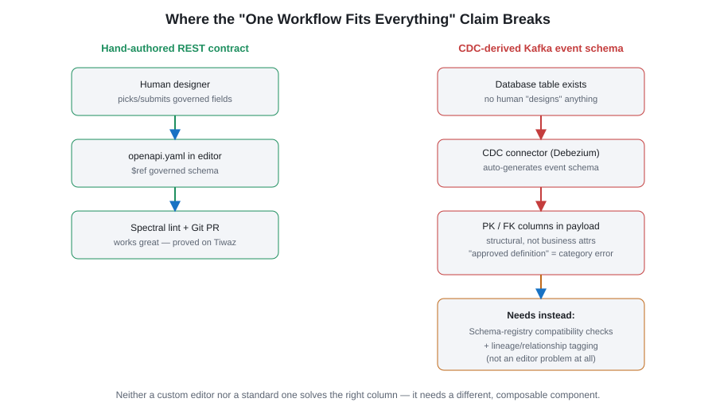

Agora Proves the "Standard Tooling" Alternative Works
Company X's decision doc claims "no tool on the market can deliver this workflow." This repo is a working counter-example, using a real external service — Tiwaz — as the proof case, not a toy.
The claim being tested
No tool on the market can deliver this workflow. Commercial tools focus on generic API design and do not integrate with [our] data governance, standards and internal data sources.
The Company X-specific parts (validation rules, data governance definitions) can be delivered as rulesets and APIs/MCPs that work with standard tools... Git + PR review + Spectral + standard editor + governance API/MCP. — Colleague B
Component-by-component mapping
| Target State requirement | Standard component used here | Where |
|---|---|---|
| Usable by non-developers | Swagger Editor (real tool, not emulated) | docker-compose.yml, :8082 |
| Integrate with governed data definitions | $ref into a shared-schema registry | governance/shared-models.yaml |
| Integrate with API standards | Spectral custom ruleset | governance/.spectral.yaml |
| Must support Contract First | Design-first authoring, Git-tracked | apis/sample-orders-api/ |
| Integrate well with GitHub | Git repo is the source of truth, PR review | this repo itself |
| Validation in pipeline + dev tools | Same ruleset, local CLI and CI | CONTRACT-FIRST.md Steps 3 & 4 |
| Flexible, developer's-choice tooling | Plain YAML/JSON in Git — any IDE works | no lock-in anywhere |
| Catalog / discoverability | Backstage, real tool, API docs plugin | backstage/, :3000 |
Tiwaz as the non-hypothetical proof
- Pulled the real contract from Tiwaz's live Swagger endpoint — no code changes, no special access.
- Cataloged it in Backstage via a standard
type: urllocation. - Linted it against the governance ruleset: 95 problems (33 errors) vs. 49 (0 errors) from stock rules.
- Defined the CI gate using the exact same ruleset file used locally.
None of this required forking an editor, building an MCP server, or committing to 5-7 MM/year of ongoing maintenance.
Answering the specific "cons" raised against Alternative 1
| Con raised | Answer, demonstrated in this repo |
|---|---|
| "Built-in validation may not cover all desired validations" | Spectral is a general-purpose linter with a fully custom DSL — arbitrary custom logic supported today. |
| "Deep integration with custom services not possible" | Governance source here is just an HTTP-served YAML file any OpenAPI tool can $ref. |
| "Difficult to track who committed changes" | No webhook in this design — Git is the source of truth, every change has a normal commit author. |
| "Ongoing license cost" | Swagger Editor, Spectral, Backstage, Git/GitHub are open-source. Zero incremental license cost. |
| "Cannot integrate with data governance" | Directly disproved by the Tiwaz lint run against a real production contract. |
Honest caveats: where "one workflow fits everything" breaks
Not every part of the decision doc's argument is wrong — and the gaps reveal a bigger problem with their approach than with standard tooling.
Gap 1 — AsyncAPI / Kafka editing is genuinely weaker in standard tooling today
Swagger Editor is OpenAPI-only. Agora has no AsyncAPI editing or linting story yet. This is a legitimate, unanswered gap, not a vendor complaint in disguise like most of their other cons.
Gap 2 — CDC-derived Kafka schemas don't fit either workflow
Schemas produced by CDC connectors (e.g. Debezium reading a database's change log) aren't designed by anyone — the schema is generated automatically from the source table's columns the moment the table exists. There is no human sitting in an editor — custom or standard — picking governed field definitions. The decision doc's entire proposed workflow (find/reuse definitions → link to fields → submit for approval) has nothing to attach to.

This matters most for primary/foreign key fields in CDC payloads:
- A CDC-emitted
customer_id: integerFK is structural plumbing, not a business attribute — it's a pointer to theCustomerentity, not a value of one. Forcing it through a rule likegoverned-schema-descriptionproduces a vacuous description or fabricates meaning that isn't there. - The thing worth governing for an FK is the relationship ("this
event's
customer_idreferences theCustomerentity"), which belongs in a data-lineage/ER model, not the same field-definition catalog asEmail. - CDC schema change-safety is a compatibility problem (backward/forward via a real schema registry), not a descriptive-linting problem. Spectral-style rules are close to meaningless against a schema shape dictated by a DBA's table design that can change at any time.
Why this is an argument for standard tooling, not against it
Neither a custom editor nor Swagger Editor solves the CDC/FK case, because it isn't an editor problem at all — it's a schema-registry-and-lineage problem. The decision doc's mistake is assuming one integrated workflow covers every contract-producing scenario in the company. It doesn't, and building a single monolithic custom tool around that one workflow locks out the scenarios that don't fit the assumption.
Standard, composable tooling is more resilient here precisely because it isn't one tool trying to cover every case:
- Spectral + a shared-schema registry handles hand-authored REST contracts (proven here against Tiwaz).
- A real schema registry with compatibility-mode enforcement is the correct tool for CDC/Kafka payload safety — a separate, already-standard component, not something the OpenAPI editor needs to also become.
- A lineage/ER layer handles FK/relationship governance, tagging surrogate keys as structural rather than forcing them into the business-glossary field catalog.
Painting all of this with one brush trades flexibility for the appearance of completeness. When a new scenario shows up that doesn't match the assumed workflow, a monolithic custom tool has to be extended or bent to fit; a composable standard-tooling stack just adds the missing component alongside the ones already working, without touching the editor, the ruleset, or the contracts already governed.
What this doesn't claim
This repo doesn't yet replicate the "AI drafts new data definitions, Data Governance approves them" submission workflow. That's naturally a small API/service to build, not a reason to also own the editor.
Bottom line
Agora is a working, Git-native, Contract-First pipeline built entirely from standard, unmodified components, validated against a real production API rather than a synthetic example. It directly contradicts "no tool on the market can deliver this workflow" for the REST/OpenAPI case, at a fraction of the ~5-7 MM/year estimated ongoing cost of Alternative 2.
Where real gaps remain (AsyncAPI editing, CDC-derived schema governance), the fix is to add the missing standard component for that specific scenario — not to retroactively justify a single monolithic editor as the answer to every contract-producing scenario in the company.